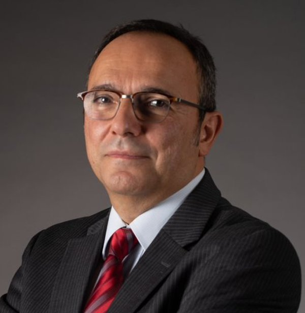

ADBIS 2025 Doctoral Consortium School (DCS)
About
The ADBIS 2025 Doctoral Consortium School (DCS), co-located with the ADBIS 2025 conference, will take place in person, between the 23rd and 26th of September 2025 at the Tampere University. It will consist of tutorials and research talks covering state-of-the-art research projects and future challenges, and a Poster Session. In the Poster Session all participants will have a chance to showcase their Phd/Postdoc research topic and results (or their Master’s thesis topic, in case they are still in the Master’s degree), and get feedback from the experts present at the event.
The DCS serves as a valuable platform to bring together early-stage research students and international experts in Database Management and Information Systems for a multi-day event. It is committed to:
- Educate on state-of-the-art topics in Data Management and Data Science, covering relevant topics that range from the design principles behind data-intensive applications, through data integration and management within big data platforms, down to the empowerment of databases and analytical processing with the latest findings in the field of artificial intelligence.
- Act as a networking hub, providing ample opportunities for students to exchange experiences with each other and to discuss in a friendly, collegial setting with the expert speakers at the event.
- Facilitate career planning discussions, focusing on designing a professional career project tailored to individual goals and considering current and future opportunities in academia and industry. This includes exploring the evolving landscape of the technology sector, researching and developing, and understanding how market dynamics and economic trends influence career paths. Participants will gain insights into aligning their aspirations with broader industry demands, helping them make informed decisions about their professional futures in a rapidly changing environment. They will have practical sessions on technical writing, text typesetting, slide preparation, technical talk preparation, and public speaking. Also, participants will discuss the virtues and limitations of research vs. industry career is envisaged.
The DCS will feature the
Research Innovation Sprint, a dynamic and interactive activity designed to foster collaboration and innovation among young researchers. Developed across the four days, participants will form diversified teams, develop original research ideas, and refine their vision with guidance from expert mentors. The experience culminates in a pitch session, where teams present their concepts and receive constructive feedback from their peers.
- Day 1: Finding Common Ground. Participants will be subdivided into groups based on their expertise and research interests.
- Day 2: From Concept to Collaboration. Teams will engage in a brainstorming activity to identify a joint research opportunity and draft an initial pitch outlining their collaborative research idea.
- Day 3: Mentorship. Teams will receive expert feedback from senior researchers and mentors.
- Day 4: The Grand Pitch. Teams will deliver their pitch presentations to peers and mentors and exchange constructive feedback.
By bringing together a diverse community, the event aims to inspire new ideas, promote cross-disciplinary interaction, and create opportunities for networking and mentorship. Importantly, it does so in a deeply respectful way and inclusive of all participants, ensuring that everyone feels valued and welcomed.
The DCS is committed to ensuring an inclusive, equal and diverse environment with zero tolerance for discrimination, harassment, or any other form of misconduct. To support Database education and research internationally, we will also provide discounted participation fees (see next section on Costs).
Application Process and Costs
The Doctoral Consortium School (DCS) will accept around 20-30 participants – they will be selected by the organizers from the applicants based on their academic progress and match of research topics/interests. Every participant will be expected to attend the in-person event and thus we encourage an early application. We encourage applications from PhD students whose research studies meet the broad area of data management and align with the scope of ADBIS, which includes Database Management Systems, Information Systems, Big Data Analytics, Scalable and Responsible Data Science. Master students and postdocs are also welcome to register subject to availability.
The DCS will have two types of participation fees: Full Fee 480€ and Reduced Fee 300€. There is only a limited supply of Reduced Fee registrations available. The participation fee includes coffee breaks and lunch served all days, and a gala dinner as part of the DCS. In addition to the participation fee, the selected participants are expected to pay for their lodging and travel expenses to Tampere. The city has many hotels and guesthouses for different budgets; we estimate per-night costs to be in the range of 80€-150€. Hostels are available as well from 30€ per-night.
Applicants must provide i) a CV (with optional publication list), ii) a description of their experience/knowledge about their research topic, and iii) a short motivation of how the DCS will benefit them in their studies/research.
All applications will be reviewed by the DCS organizers to select participants and assign reduced fees. Applicants will finally be notified and asked to proceed with the payment in case of acceptance. Rejected applicants may be re-contacted at a later stage if new slots become available.
Application Form
Available here.
Important Dates
- Applications: registration opens 1st of April 2025
- Applications deadline: 1st of July 2025
- Notification of acceptance: 15th of July 2025
- Payment due: 30th of July 2025
- Doctoral Consortium School (DCS): 23-26 September 2025
Organization
The persons co-organizing the ADBIS 2025 Doctoral Consortium School (DCS) are:
Local Organization
Location
The Doctoral Consortium School (DCS) lectures take place at:
Main Building of the City Campus of the Tampere University in Tampere, Finland.
The official address is Kalevantie 4, 33100 Tampere.
Efficient and AI-based Data Management at Scale: From Design Principles to Query Optimization
Program – 32 hours (1 to 1.5 ECTS validation based on project evaluation and exam)
|
|
| Day 1 - Tuesday, 23rd September 2025 |
| 08:30 – 09:00 |
Conference and School Opening |
| 09:00 – 11:00 |
Introduction + Data and Soft Skills Challenge Presentation
PhD Consortium Co-Chairs |
| 11:00 – 11:30 |
Coffee break |
| 11:30 – 12:30 |
Data Quality in the Age of AI
Felix Naumann, Hasso Plattner Institute, University of Potsdam |
| 12:30 – 14:00 |
Lunch |
| 14:00 – 16:00 |
Designing and Deploying DS Projects
Tania Cerquitelli, Politecnico di Torino |
| 16:00 – 16:30 |
Coffee break |
| 16:30 – 17:30 |
Data Profiling - a Primer
Felix Naumann, Hasso Plattner Institute, University of Potsdam |
| Day 2 - Wednesday, 24th September 2025 |
| 09:00 – 10:00 |
Diversity-Aware, Fair and Unbiased Data Management
Evaggelia Pitoura, University of Ioannina |
| 10:00 – 10:30 |
Coffee break |
| 10:30 – 12:30 |
Data Integration for Data Science: Solutions and Still Open Problems
Robert Wrembel, Poznan University of Technology |
| 12:30 – 14:00 |
Lunch |
| 14:00 – 16:00 |
Research Innovation Sprint - Proposal Preparation |
| 16:00 – 16:30 |
Coffee break |
| 16:30 – 17:30 |
Demo session & PhD projects poster presentations |
| 18:00 – 19:00 |
Special activity in Tampere: Walking Tour |
| 19:00 – 20:30 |
Special activity in Tampere: Visit to Old City Hall |
| Day 3 - Thursday, 25th September 2025 |
| 09:00 – 10:00 |
Digital Humanities on the Semantic Web: from Infrastructure to Practical Applications, AI-based Knowledge Discovery, and Web of Wisdom
Eero Hyvönen, Aalto University |
| 10:00 – 10:30 |
Coffee break |
| 10:30 – 12:30 |
Neuro-Symbolic Query Optimization in Knowledge Graphs
Maribel Acosta, Technical University of Munich |
| 12:30 – 14:00 |
Lunch |
| 14:00 – 16:00 |
Technical writing, text typesetting, slides preparation, technical talks preparation, and public speaking
Tatjana Welzer, University of Maribor |
| 16:00 – 16:30 |
Coffee break |
| 16:30 – 17:30 |
Ethical & Equitable Data Science: Bridging Social Justice and Technical Innovation
Genoveva Vargas-Solar, CNRS, LIRIS |
| 19:00 |
Special activity in Tampere: Gala Dinner |
| Day 4 - Friday, 26th September 2025 |
| 09:00 – 10:00 |
Interactive Digital Storytelling
Yannis Ioannidis, University of Athens |
| 10:00 – 10:30 |
Coffee break |
| 10:30 – 12:30 |
Diversity, Equity and Inclusion Panel |
| 12:30 – 14:00 |
Lunch |
| 14:00 – 16:00 |
Vector database management systems
Toni Taipalus, Tampere University |
| 16:00 – 16:30 |
Coffee break |
| 16:30 – 17:30 |
Research Innovation Sprint - The Grand Pitch |
Our Speakers

Felix Naumann
University of Potsdam
Data Quality in the Age of AI
Data Profiling - a Primer
Bio
Abstracts
Tania Cerquitelli
Politecnico di Torino
Designing and deploying DS projects
Bio
Abstract

Evaggelia Pitoura
University of Ioannina
Diversity-Aware, Fair and Unbiased Data Management
Bio
Abstract
Robert Wrembel
Poznan University of Technology Interdisciplinary Centre for Artificial Intelligence and Cybersecurity
Data Integration for Data Science: Solutions and Still Open Problems
Bio
Abstract

Eero Hyvönen
Aalto University
Digital Humanities on the Semantic Web: from Infrastructure to Practical Applications, AI-based Knowledge Discovery, and Web of Wisdom
Bio
Abstract
Maribel Acosta Deibe
Technical University of Munich
Neuro-Symbolic Query Optimization in Knowledge Graphs
Bio
Abstract
Tatjana Welzer
University of Maribor
Technical writing, text typesetting, slides preparation, technical talks preparation, and public speaking
Bio
Abstract
Genoveva Vargas-Solar
CNRS, LIRIS
Ethical & Equitable Data Science: Bridging Social Justice and Technical Innovation
Bio
Abstract

Yannis Ioannidis
National and Kapodistrian University of Athens
Interactive Digital Storytelling
Bio
Abstract
Toni Taipalus
Tampere University
Vector database management systems
Bio
Abstract
×
Felix Naumann
Felix Naumann studied mathematics, economy, and computer sciences at the University of Technology in Berlin and completed his PhD thesis in the area of data quality at Humboldt University of Berlin in 2000. After a PostDoc position at the IBM Almaden Research Center working on data integration topics, he came assistant professor for information integration, again at the Humboldt-University of Berlin in 2003. Since 2006 he holds the chair for Information Systems at the Hasso Plattner Institute (HPI) at the University of Potsdam in Germany. He has been visiting researcher at QCRI, AT&T Research, IBM Research, and SAP. His research interests include data profiling, data quality and cleansing, and data integration, recorded in over 200 scientific publications. Next to numerous PC memberships for international conferences, he has organized several conferences in various roles, including VLDB 2021 as PC co-chair, and he is the Editor-in-Chief of the ACM Journal of Data and Information Quality (JDIQ). More details are at https://hpi.de/naumann/people/felix-naumann.html.
×
Data Quality in the Age of AI
Data quality comprises a large set of dimensions, covering many facets including simple statistics, syntactic problems, factual errors, and organizational and business aspects. With the current trend in data-oriented sciences and the increasing reliance on machine learning methods and AI systems, the challenges of poor data quality are ever more apparent. Even recent legislation, such as the EU AI Act, mentions data quality requirements for training data. With it, the notion of data quality extends to novel dimensions, such as fairness, diversity, or explainability. In the talk we shall highlight research in this field and point out current challenges and research opportunities.
Data Profiling - a Primer
Data profiling is the act of extracting many different types of metadata from a given dataset. This research area has recently thrived, due to (i) its simple problem statements, such as "discover all key candidates", (ii) the high computational complexity of the problems, which are often exponential in the number of columns, (iii) the manifold opportunities for optimizations, such as apriori-inspired pruning or data sampling, and (iv) the various application areas for data profiling results, such as query optimization and data cleaning. In the talk, we will first cover the traditional problem statements and use cases and then highlight algorithmic intuitions of some solutions. Finally, we discuss open problems and promising research directions, for both data profiling and its use cases.
×
Evaggelia Pitoura
Evaggelia Pitoura is a Professor at the Department of Computer Science and Engineering at the University of Ioannina and a Lead Researcher at Archimedes Research Unit of Athena RC, Greece. She holds a BEng degree from the University of Patras, Greece, and an MS and PhD from Purdue University, USA. Her current research interests focus on two primary areas: responsible data management, with a focus on fairness, explainability, and their interplay; and on graph exploration and analysis. For her work, he has received best paper awards, a Marie Currie Fellowship and two Recognition of Service Awards from ACM. She is an ACM senior member, chair of the Greek ACM-W event steering committee, chair of the Hellenic ACM SIGMOD chapter, and member of the sectorial scientific council of Greece National Council for Research, Technology and Innovation.
×
Eero Hyvönen
Eero Hyvönen is professor of semantic media technology at the Aalto University, Department of Computer Science, and director of Helsinki Centre for Digital Humanities (HELDIG) at the University of Helsinki. His research has focused since 2001 on Semantic Web and Linked (Open) Data technologies, developing with his Semantic Computing Research Group (SeCo) (https://seco.cs.aalto.fi/) the national semantic web infrastructure in Finland (https://seco.cs.aalto.fi/projects/lodi4dh/) and its applications in different areas, especially in Cultural Heritage and for Digital Humanities research (https://seco.cs.aalto.fi/applications/sampo/). Eero Hyvönen has published nearly 600 articles and books and got nearly 30 international and national honorary prizes and acknowledgements.
Eero Hyvönen
[1] Eero Hyvönen: Using the Semantic Web in Digital Humanities: Shift from Data Publishing to Data-analysis and Serendipitous Knowledge Discovery. Semantic Web, vol. 11, no. 1, pp. 187-193, 2020.
[2] Eero Hyvönen: How to Create a National Cross-domain Ontology and Linked Data Infrastructure and Use It on the Semantic Web. Semantic Web, vol. 15, no. 4, pp. 1499-1513, 2024.
[3] Eero Hyvönen: Digital Humanities on the Semantic Web: Sampo Model and Portal Series. Semantic Web, vol. 14, no. 4, pp. 729-744, 2023.
[4] Eero Hyvönen: Serendipitous knowledge discovery on the Web of Wisdom based on searching and explaining interesting relations in knowledge graphs. Journal of Web Semantics, Elsevier, 2025.
×
Digital Humanities on the Semantic Web: from Infrastructure to Practical Applications, AI-based Knowledge Discovery, and Web of Wisdom
Publishing Cultural Heritage (CH) data and Digital Humanities (DH) has evolved in phases from text carving and handwriting to printing texts, to publishing texts on-line, to publishing FAIR linked data comprehensible to computers for data enrichment and analysis, and to AI-based knowledge discovery on the Web, a “Web of Wisdom” [1]. In this keynote, lessons learned are overviewed on developing a national Semantic Web infrastructure [2] and over 20 in-use systems based on it with up to millions of end users during 2002-2024 [3]. The underlying linked data in these applications include museum collections, bibliographical data in libraries, medieval and renaissance manuscripts, military history, biographies, narratives, historical letter data, archaeological finds, legislation, parliamentary speeches, and art. Targeted to Digital Humanities researchers, application developers, and the public, these systems contain a Linked Open Data (LOD) service with a live SPARQL endpoint that can be used with modest programming skills for DH research, and a ready-to-use semantic portal on top of it. This work has led into the so-called Sampo Model for creating and publishing CH Knowledge Graphs (KG) as LOD services and semantic portal User Interfaces (UI).
×
Yannis Ioannidis
Yannis Ioannidis (Ph.D., Computer Sciences, UC Berkeley; MSc, Applied Mathematics, Harvard University; Diploma, Electrical Engineering, National Technical University of Athens) is the President of the Association of Computing Machinery (ACM). He is a Professor at the Department of Informatics and Telecom of the University of Athens as well as an Associated Faculty at the “Athena” Research and Innovation Center, where he also served as the President and General Director for 10 years. His research interests include Database and Information Systems, Data Science, Data Infrastructures and Digital Repositories, Recommender Systems and Personalization, and Interactive Digital Storytelling, topics on which he has published over 180 articles in leading journals and conferences and holds four patents. His work is often inspired by and applied to data management and analysis problems that arise in industrial environments or in the context of other scientific fields (Social Sciences and Humanities, Life Sciences, Physical Sciences) and the Arts. He is an ACM and IEEE Fellow, a member of Academia Europaea, and a recipient of several research, teaching, and service awards. He is a co-founder of OpenAIRE, the international data infrastructure for Open Science in Europe, as well as of several AI/data-driven start-ups. He is also a co-chair of the Global Climate Hub of the UN Sustainable Development Solutions Network.
×
Robert Wrembel
Robert Wrembel (PhD, Dr. Habil.) is an associate professor in the Faculty of Computing and Telecommunications, at Poznan University of Technology (Poland). In 2008 he received a post-doctoral degree in computer science (habilitation), specializing in database systems and data warehouses. He has been a deputy dean of the Faculty of Computing and Management (2008–2012) and the Faculty of Computing (2012–2016). Since Jan 2023 he is the chair of the Data Processing Technologies group at Poznan University of Technology; since May 2023 he is the leader of the Interdisciplinary Centre for Artificial Intelligence and Cybersecurity in Poznań
https://caics.put.poznan.pl/.
He was a consultant at software house Rodan Systems (2002–2003) and a lecturer at Oracle Poland (1998–2005). Currently he is an IT consultant in hospital Centrum Medyczne HCP. Within the last 10 years he has realized four R&D projects: one for the biggest Polish bank – PKO BP, one for a company in the energy sector – Kogeneracja Zachód, and two for Samsung Electronics. He cooperates with IBM Software Lab Kraków in Poland. He has led at his University the Erasmus Mundus Joint Doctorate Program – Information Technologies for Business Intelligence – Doctoral College (2013–2020). Robert visited numerous research and education centers, including: Universitat Politècnica de Catalunya – BarcelonaTech (Catalunya), Université Lyon 2 (France), Universidad de Costa Rica (Costa Rica), Klagenfurt University (Austria), Loyola University (USA), INRIA Paris-Rocquencourt (France), and Université Paris Dauphine (France). In 2012 he graduated from a 2-month innovation and entrepreneurial program at Stanford University. In 2013 he has done an internship in a BI company Targit (USA). His research interests encompass: data integration, data quality, databases, data warehouses, and data lakes.
Webpage: http://www.cs.put.poznan.pl/rwrembel/
×
Genoveva Vargas-Solar
Genoveva Vargas-Solar is a CNRS principal scientist (exceptional class) and a member of the Database group at the LIRIS lab in France. From 2008 to 2020, she was deputy director of LAFMIA, an international research unit at CINVESTAV. A regular Mexican Academia of Computing member, she has organized numerous international conferences, workshops, and thematic schools, such as EDBT Summer Schools (2009, 2013) and the Franco-Brazilian School on Smart Cities and Big Data (2015, 2017). She has edited several conference publications and served on program committees for major journals and events in databases and service-based programming. Her research spans fundamental and applied challenges on ARM, Raspberry, cloud, and HPC architectures, applied to e-science in Astronomy, Biology, social sciences, and Industry 4.0. She has coordinated multiple international research projects and actively fosters scientific collaboration between Latin America and Europe, particularly between France and Mexico. Additionally, she is a committed advocate for gender equity, diversity, and inclusion, serving as a gender equity officer at LIRIS and coordinating initiatives like the DEI Database Conferences.
×
Ethical & Equitable Data Science: Bridging Social Justice and Technical Innovation
This 1-hour course provides a comprehensive exploration of the ethical, social, and fairness challenges in data-driven decision-making. The session begins by introducing key ethical principles, including transparency, accountability, and bias mitigation. Participants will examine real-world cases where data practices led to unintended harm, highlighting the need for responsible AI and fairness in model development.
The course will explore the broader socio-economic, environmental, and ethical implications of data science. Special attention will be given to issues of data sovereignty, fairness, and inclusivity, particularly addressing the marginalization of voices and the impact of technological monopolies. Participants will be introduced to decolonial methodologies and fairness metrics that respect cultural and contextual diversity. The course will also cover practical techniques for detecting and mitigating biases in datasets and algorithms, including algorithmic auditing and inclusive data collection practices. Additionally, attendees will gain an understanding of regulatory frameworks such as AI ethics principles, helping them navigate the legal and ethical landscape of responsible data science.
The session concludes with an exploration of best practices for building equitable and trustworthy models, empowering participants to apply ethical considerations in their own work.
Through interactive discussions and case studies, this course fosters a socially responsible approach to data science, challenging the dominance of major tech companies and advocating for sustainable and inclusive resource allocation in analytics.